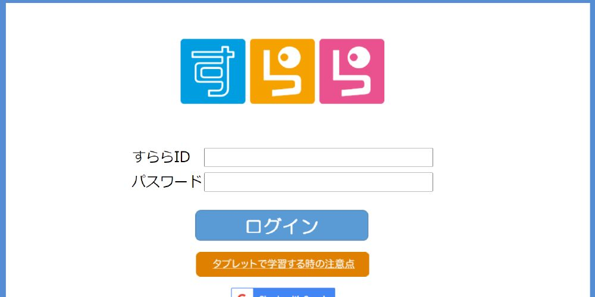
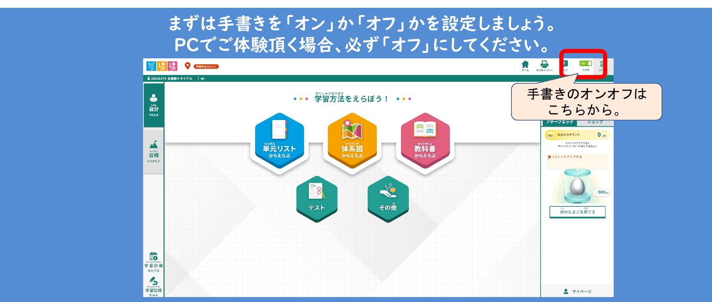
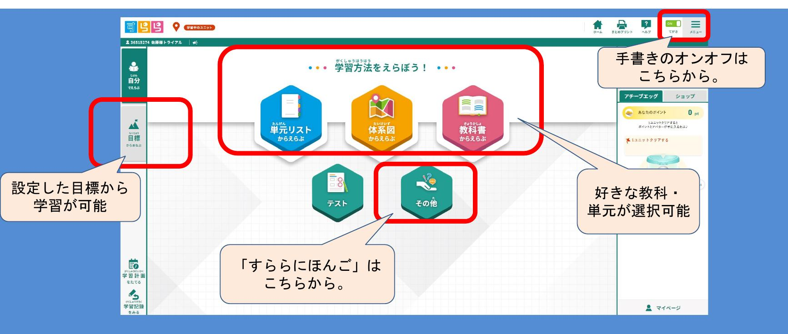
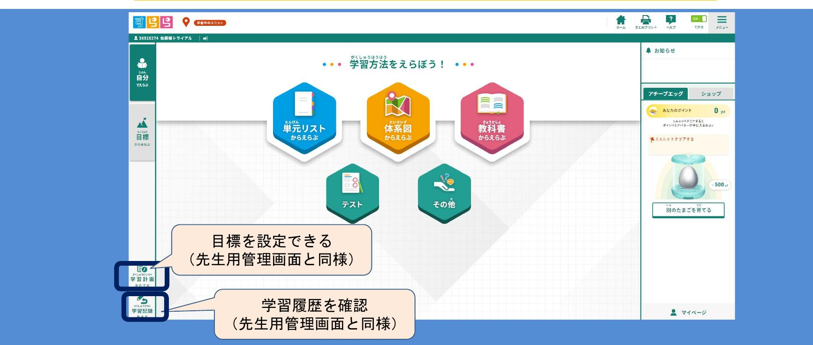
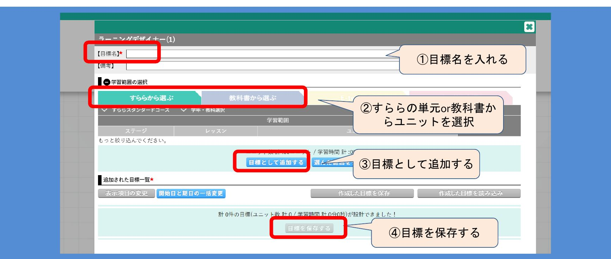
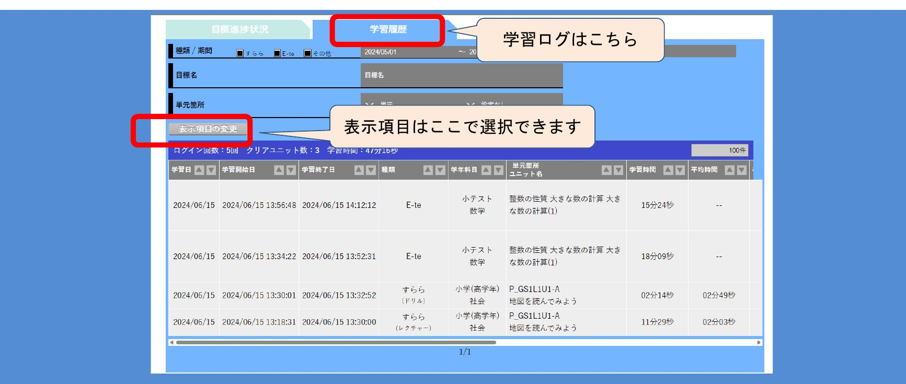

はじめてお使いになる方へ「すらら無料体験ID」利用ガイド
お申し込みいただいた無料体験IDで「すらら」をご体験いただくための手引きです。ログインから、体験時のおすすめの使い方、教材のおすすめユニットまでをまとめています。
ログイン方法
お送りしたメールに記載の「すららID」と「パスワード」を入力し、ログインを押してください。

「すらら」TOPページについて
ログイン後に表示される、生徒用のTOPページです。まずは手書き機能の設定から確認します。
はじめに、手書き機能のオン／オフを設定する
画面右上のトグルで切り替えます。PCでご体験いただく場合は、必ず「オフ」に設定してください。タブレット＋タッチペンでご体験の場合は「オン」のままお使いいただけます。

手書き機能がオンのままだとマウス操作では書きづらくなります。設定を「オフ」にしてからお進みください。
TOPページの各メニュー
学習の入り口は大きく2つ。「単元リスト」「体系図」「教科書」から選ぶと、あらかじめ設定した「目標」から学習する方法です。日本語学習教材「すららにほんご」は「その他」から開きます。

体験時のおすすめ利用法
どなたがお使いになるかで、選んでいただきたい単元が変わります。
いま学校で学習している単元を「すらら」で学習
「すらら」は0ベースで学べる教材です。今まさに学校で習っている単元を、「すらら」ではどのように教えるのかをぜひご体験ください。
お好きな教科・単元を「すらら」で学習
内容をご存じのぶん退屈に感じる箇所もあるかと思いますが、子どもになったつもりでレクチャーからしっかりお聞きください。中学生版の国語（ステージ9）や高校生版の数学など、ご自身が理解しきれていない箇所をご覧になるのもおすすめです。
先生用機能の一部を生徒IDから見る
ご契約前は先生用の管理画面そのものはご体験いただけませんが、一部の機能は生徒用IDからご覧いただけます。TOPページ左下の「学習計画をたてる」「学習記録をみる」の2つです。

学習計画をたてる（ラーニングデザイナー）
目標（カリキュラム）を設定する画面です。次の4ステップで作成します。
- 目標名を入れる
- 「すららから選ぶ」または「教科書から選ぶ」でユニットを選択する
- 「目標として追加する」を押す
- 「目標を保存する」で保存する

学習記録をみる
学習ログを確認する画面です。「学習履歴」タブで、学習日・学習時間・単元箇所などを一覧できます。表示する項目は「表示項目の変更」から選べます。

おすすめユニット一覧
どの単元から見るか迷われたときは、こちらからお選びください。ユニットコードは「単元リスト」から検索・選択できます。
小学生
7 units| 版 | 教科 | ユニットコード | 単元名 |
|---|---|---|---|
| 小学校低学年版 | 国語 | 文_ステージ6-1-3 (2/2) | 事実と感想の区別 |
| 小学校高学年版 | 国語 | P1-2-3A | 修飾語がつながるのはどの言葉? |
| 小学校低学年版 | 算数 | LM_B31-1 | 掛け算 |
| 小学校高学年版 | 算数 | 11-2-1 | 垂直と平行 |
| 小学校高学年版 | 算数 | 9-1-1B | 速さを求める |
| 小学校高学年版 | 理科 | エネルギー分野ステージ2-1-2-A | 極のせいしつ |
| 小学校高学年版 | 社会 | 小学地理 stage1-1-1 | 地図を読んでみよう |
中学生
10 units| 版 | 教科 | ユニットコード | 単元名 |
|---|---|---|---|
| 中学校版 | 数学 | 17-1-1 | 三平方の定理 |
| 中学校版 | 数学 | 8-6-1B | 文章題の解き方 |
| 中学校版 | 数学 | 7-1-1 | 平方根を理解しよう |
| 中学校版 | 英語 | 5-2-9A | 比較級 |
| 中学校版 | 英語 | 6-2-11A | 現在完了 |
| 中学校版 | 英語 | 5-6-18A | 受動態 |
| 中学校版 | 国語 | 5-59-1B | 言葉と言葉のつながりの意味を理解しよう（重文・複文） |
| 中学校版 | 国語 | 6-65-1 | 文脈把握：指示内容を把握しよう |
| 中学校版 | 理科 | エネルギー分野14-2 | 力が働く物体の運動 |
| 中学校版 | 理科 | 地球分野3-3-1 | 月の動きと見え方 |
高校生
12 units| 版 | 教科 | ユニットコード | 単元名 |
|---|---|---|---|
| 高校生版 | 英語 | 5-1-1 | 仮定法 |
| 高校生版 | 英語 | 2-5-4 | 不定詞完了形 |
| 高校生版 | 英語 | 5-1-2B | 仮定法過去 |
| 高校生版 | 英語 | 2-9-1A | 分詞構文 |
| 高校生版 | 国語 | 2-0-1 | 必要な知識を身につけよう |
| 高校生版 | 国語 | 1-1-1 | 文脈把握：指示内容を把握しよう |
| 高校生版 | 国語 | 2-6-1A | 必要な知識を身につけよう |
| 高校生版 | 国語 | 1-1-1A | 文脈把握：指示内容を把握しよう |
| 高校生版 | 数学 | 4-1-1 | 集合 |
| 高校生版 | 数学 | 15-1A | 場合の数 |
| 高校生版 | 数学 | 5-1-1B | 2次関数 |
| 高校生版 | 数学 | 15-3-1B | 組み合わせ（発展） |
よくある質問
手書き機能がオンになっていて、PCで使いづらいです。
TOPページの「設定」より「手書き機能オフ」に設定をお願いします。
テスト機能が利用できません。
お渡ししている体験IDでは「テスト機能」はご利用になれません。各ユニットのレクチャーとドリルのみのご体験となります。
先生用の管理画面も体験したいのですが。
先生用の管理画面は弊社ノウハウのため、ご契約前にご体験いただくことはできません。生徒用TOPページにある「ラーニングデザイナー」「学習履歴」が先生用管理画面の一部機能となりますので、こちらをご確認いただき、参考にしていただければと思います。